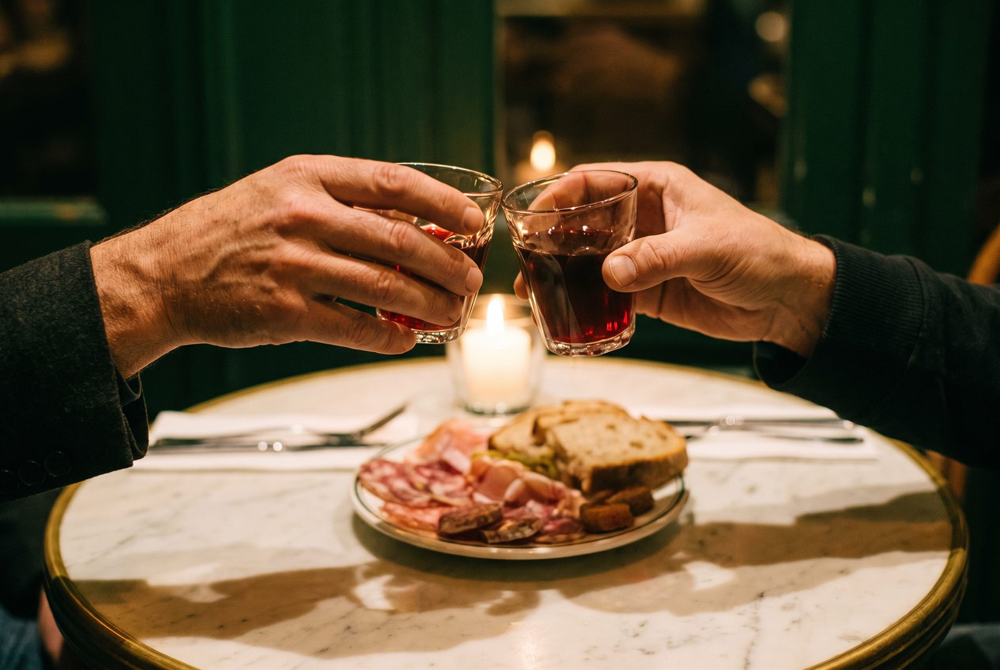

Ricotta fouettée, pesto de fanes de radis
Une entrée simple en apparence, tout en fraîcheur et en texture — rien ne se perd, jusqu'aux fanes.
Canada's 100 Best Restaurants — 2025
Une buvette de quartier à Villeray, nommée parmi les 100 meilleurs restaurants au Canada en 2025 — et qui n'avait, jusqu'ici, aucun site web.
Petites assiettes saisonnières à partager, vins choisis avec soin, produits locaux et bio. À deux pas du métro Jarry.
L'histoire
Claire Jacques est née de la rencontre de Laurence Théberge, passée par les cuisines de Patrice Pâtissier, et de son conjoint Philippe Guilbault, formé chez Mastard. Deux chefs d'expérience qui ont choisi Villeray pour ouvrir une buvette à leur image : sans prétention, précise dans l'assiette, et pensée pour qu'on y revienne.
Le résultat est un lieu convivial, à taille humaine, où le service du vin et celui de la cuisine avancent au même rythme — celui d'un repas qu'on ne presse pas.
Le concept
Une carte de petites assiettes saisonnières à partager, salées et sucrées, bâtie autour de produits locaux et biologiques. Deux exemples, pour donner le ton :
Une entrée simple en apparence, tout en fraîcheur et en texture — rien ne se perd, jusqu'aux fanes.
Le sucré-salé assumé, servi en petite quantité — fait pour être partagé au centre de la table.
La carte change avec les saisons : ces deux assiettes illustrent le style de cuisine de la maison, pas un menu figé.

Nous trouver